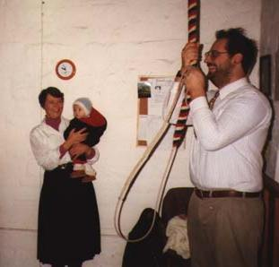

This article was written when I lived in Wicken. I moved away a long time ago, in 1997, but still visit and have many friends there.
Wicken is a little village of about 600 souls on the edge of the Cambridgeshire Fens. It has been well known for many years as the home of Wicken Fen National Nature Reserve, Britain's oldest nature reserve. However there is more to it than that.
Wicken has a church, St Lawrence's. It is an active church with plenty going on - quite unusual in a parish of 600. There is also a Methodist Chapel, which has a good attendance too. In fact the churches are the best places to meet your neighbours. The vicar, Francis Beloe, and his wife Sheila, are our local stars, and are very well known all around the village, even amongst the non-churchgoers.
|  | I join in the bell ringing, in the recently restored ringing chamber. I learnt ringing in Hampshire when I was young. Most of my mother's family were ringers, going back years. We have five bells, which sound a bit rough but ring beautifully. The tenor (the largest bell) was repaired in spring 1996, with new bearings installed in the mediaeval oak bellframe. The cost was about £500, which the bellringers raised by holding a barbeque |
at Spinney Abbey in summer 1996. This event was notable for being the windiest day of the year, when just about everything was blown away. But we liked it. The oldest bell is pre-reformation, and was cast in 1494 I think. Every Tuesday evening after ringing we go down to the Maids Head Pub.
The Maids Head has been the village pub for as long as anyone can remember. In the early 1980s it burnt down partly, and was rebuilt. It is still very olde worlde on the outside, but the inside is not so much. However this does mean that it is very comfortable, and has plenty of room in it. There is a public bar, with darts and pool, and a little juke box. On the other side there is restaurant and lounge bar. Very cosy. The beer is nice, and the food is even better. The pub is not a bad place to meet Wicken people either. There used to be another pub called the Black Horse at the end of Lode Lane, where we live. This is now a cottage, and it doesn't look anything like as nice as the Maids Head, so I don't imagine we have missed much.
Shopping is not easy at Wicken. There is now only the farm shop at Hall Farm, run by the Tylers. Chris Tyler is also a bellringer at the church, over the road. Tylers sell very good meat, particularly pork, and home-made beefburgers, sausages and other stuff. They also have a bit of veg and bread, and so on. They sell a few second-hand things in aid of the church funds. The village shop proper closed in 1994. The nearest place to buy newspapers, milk, and so on is Soham.
Author and local artist Tony Day has written some books about the history of Wicken. They can be obtained from the Wicken Fen Nature Reserve shop. The recent history of Wicken is largely a history of closures. There is now no longer a permanent post office, or a shop, or a school, or more than one pub, or more than one bus a week, or much else. All these things existed not so long ago. However the village has a surprisingly strong sense of community, and still very much its own identity.
There is a very fine rock & roll band called Group Sax and the Four Players, who do a great set of covers. They keep promising to break up but so far no sign of it, although we went to a great farewell gig not so long ago. Everyone is looking forward to the next one.
NB When I lived in Wicken I used to sit in the pub and hear the latest. This occasionally filtered onto this page. These days, because I no longer live there, it doesn't. So please, if you are still in Wicken, do let me know what's wrong/missing. I'd be delighted to hear from you.